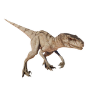

Useful Website
Atrociraptor is a carnivorous dinosaur from the dromaeosaurid family, and dates back to the late Cretaceous period. The name Atrociraptor translates from Latin as ‘savage seizer’, in reference to the rows of serrated teeth it uses to catch and kill prey such as lizards and small mammals. This genus is one of InGen’s ‘designer dinosaurs’ and exists in a variety of colours. It grows to around 4m in length and has been bred to display great dexterity, high intelligence and large, powerful claws, making it an extremely efficient hunter.
